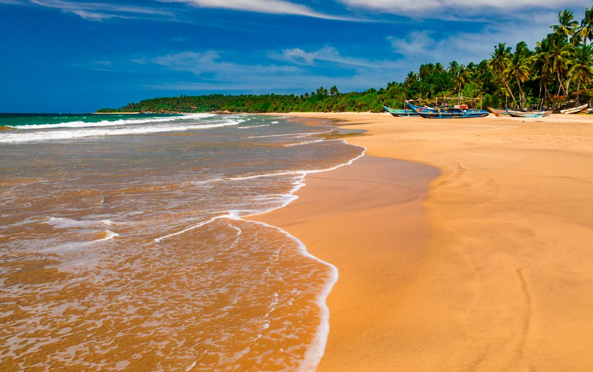
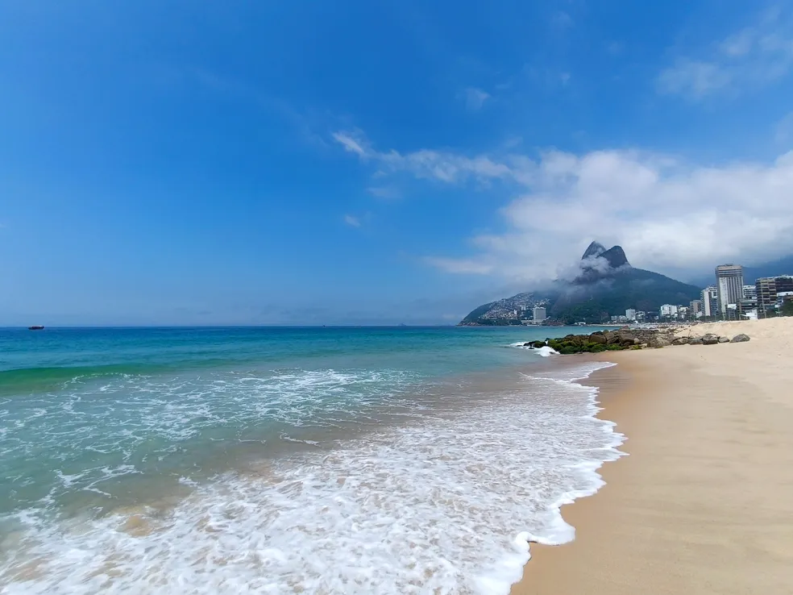
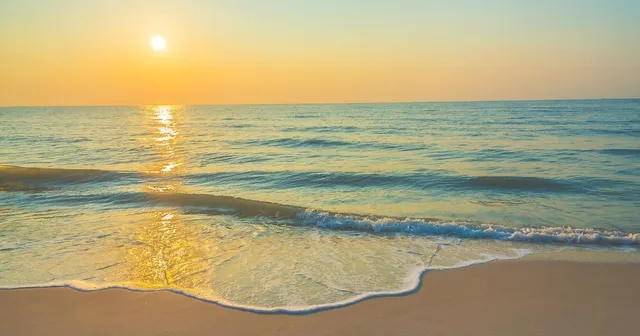

Praia de Areias Brancas: Localizada em uma enseada tranquila, esta praia é famosa por suas areias finas e águas cristalinas. Perfeita para famílias e amantes da natureza, oferece um pôr do sol deslumbrante que pinta o céu de tons pastéis.

Baía Esmeralda: Escondida entre falésias verdejantes, esta baía é um refúgio paradisíaco para os viajantes em busca de tranquilidade. As águas calmas e a vegetação exuberante criam um cenário idílico para relaxar e apreciar a vida marinha.

Praia das Conchas Douradas: Conhecida por suas conchas douradas que brilham sob o sol, esta praia encanta os visitantes com sua beleza natural intocada. Ideal para snorkeling, oferece uma visão deslumbrante dos recifes de coral e dos peixes coloridos.
Enseada Serena: Uma enseada isolada cercada por colinas verdejantes, onde as águas azul-turquesa se encontram com areias douradas. É o lugar perfeito para mergulhar nas águas tranquilas e explorar cavernas marinhas escondidas.

Praia do Sol Nascente: Nomeada assim por sua vista deslumbrante do nascer do sol sobre o mar, esta praia é um ponto de encontro popular para surfistas e fotógrafos. As ondas suaves e o ambiente sereno tornam-na ideal para meditação matinal.

Baía dos Golfinhos: Conhecida por ser o lar temporário de uma colônia de golfinhos, esta baía oferece não apenas a chance de ver os mamíferos marinhos em seu habitat natural, mas também praias de areia macia e águas cristalinas para nadar e relaxar.

Praia das Falésias Vermelhas: Situada sob imponentes falésias vermelhas que contrastam com o azul profundo do oceano, esta praia é um cenário dramático para os amantes da fotografia. As formações rochosas oferecem trilhas panorâmicas e vistas deslumbrantes do litoral.
Enseada das Pérolas Negras: Conhecida por suas areias negras brilhantes, esta enseada é cercada por florestas tropicais exuberantes e águas mornas. Ideal para quem busca uma experiência única de praia, é um local popular para caminhadas e observação de aves.